How to Migrate a CPanel Server to Linode
Updated by Linode Written by Nathan Melehan
This guide describes how to migrate from a server running WHM and CPanel on another hosting service to Linode. This transfer is completed using CPanel’s official Transfer Tool. Prior to using the Transfer Tool, you will complete a basic WHM installation on a new Linode. Read the Best Practices when Migrating to Linode guide for more information about migrating your sites before beginning.
NoteThe Transfer Tool only transfers your CPanel accounts, and not your WHM settings. You will need to recreate your WHM settings on your new Linode separately.
This guide does not cover how to handle CPanel deployments that are part of a DNS cluster. For guidance on migrating a CPanel server in a DNS cluster, see CPanel’s official documentation.
Migrate Your CPanel Accounts
Deploy Your Linode
Follow Linode’s Getting Started guide and choose CentOS 7 as your Linux image. Choose a Linode plan with enough storage capacity to accommodate the data within the CPanel accounts on your current host.
Use the How to Secure Your Server guide to create a limited Linux user with
sudoprivileges.Stand up a new WHM/CPanel installation by following the Install CPanel on Linode guide. Use the Linode’s generic domain name for WHM’s Hostname setting. This generic domain will be listed under the Remote Access tab for your Linode in the Linode Manager, and it will have the form
liXY-ABC.members.linode.com.Note
You will set the Hostname to be your actual domain name later on in this guide. If you set the Hostname setting as your domain name now, the WHM and CPanel dashboards on your new Linode will redirect to your current host, and you will not be able to access the settings for your new Linode.
Use the CPanel Transfer Tool
Visit
http://your_linode_ip_address:2087in your web browser to load the WHM dashboard. Bypass the browser warning message about the web server’s SSL/TLS certificate.Log in to WHM with the root user and password for your Linode.
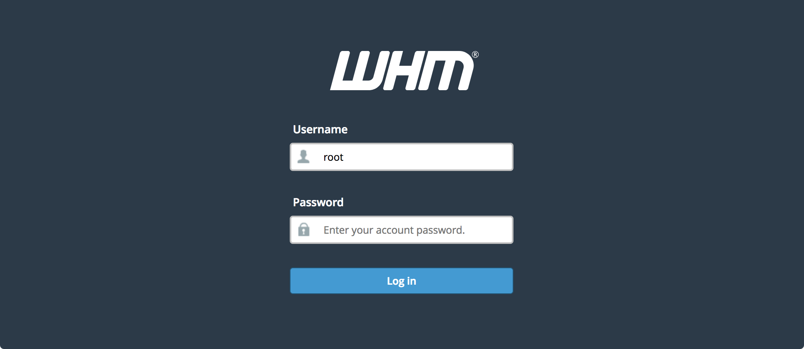
In the menu on the left side of the WHM dashboard, scroll down to the Transfers section and choose the Transfer Tool option:
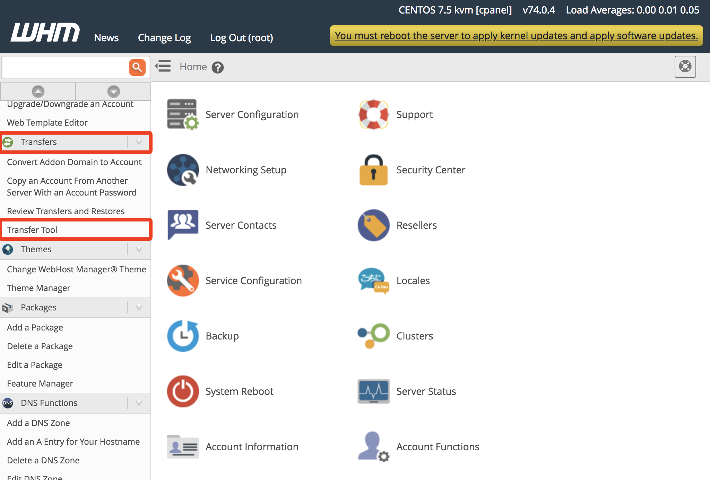
In the Remote Server Address field, enter your current host’s IP address:
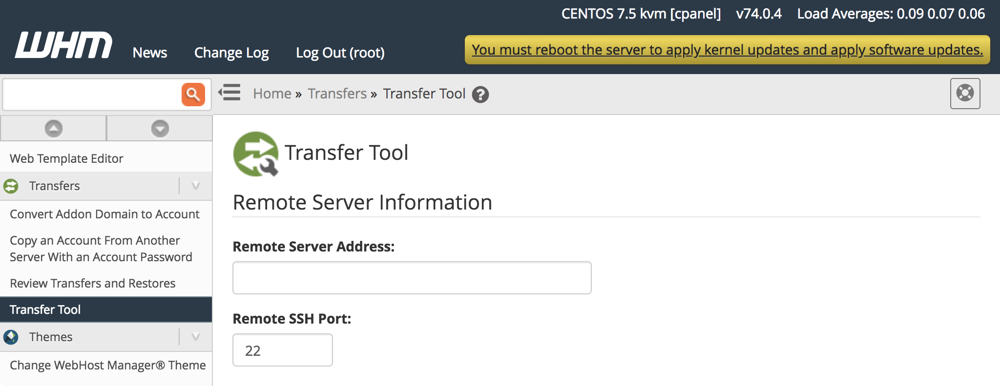
Enter the root credentials for your current host under the Authentication section. You will need the root password for your current host and root logins should be allowed on that host.
If you don’t have root credentials or if root logins are not allowed, you will need the credentials of another user with
sudoprivileges on your current host. Enter that username and password and choose sudo for the Root Escalation Method field.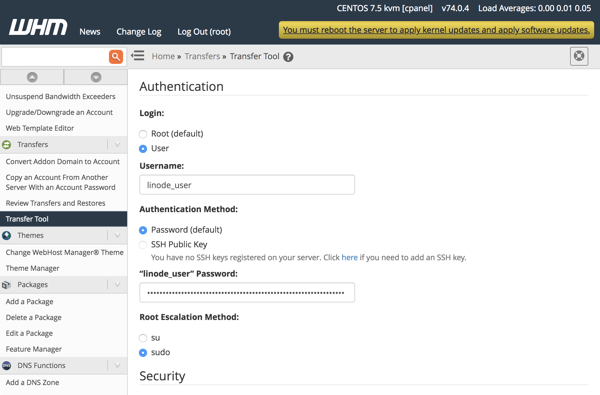
Click the Fetch Account List button at the bottom of the form.
A new page will load with forms listing the Service Configurations, Packages, and Accounts from your current host. Click the corresponding checkbox for each item in these sections to enable their transfer. Click the Show button for the Service Configurations section to see the options in that area:
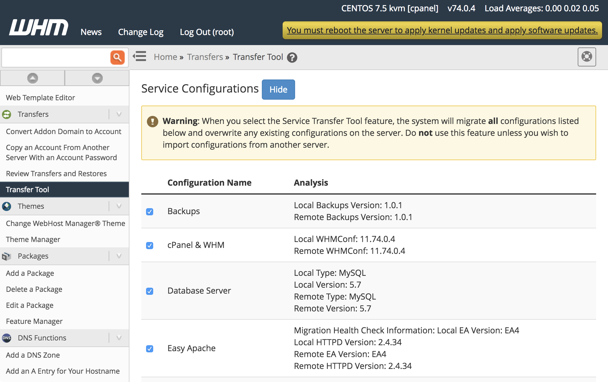
When all of the options are selected, click the Copy button at the bottom of the page. A new page will appear showing the progress of your transfer:
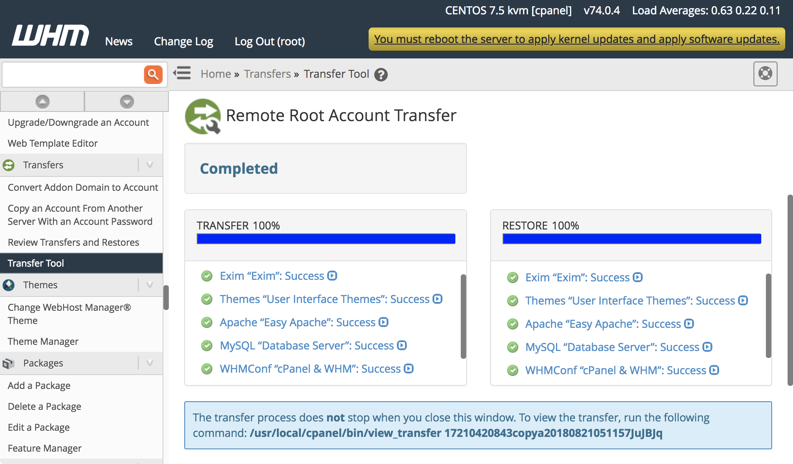
Verify Transferred Accounts
You should verify that all information from your CPanel accounts was transferred successfully to your Linode. To do this, you will log in to CPanel on your new Linode for each account that was transferred and review the contents of the dashboard. The specific information in the following sections should also be reviewed for each account.
Verify IP Address Assignments
The Transfer Tool will attempt to assign your new Linode IP to the transferred CPanel accounts. It will sometimes fail and leave your old host’s IP in place, so you should confirm which IP is assigned to your CPanel accounts:
In the menu on the left side of the WHM dashboard, navigate to the Account Information section and choose the List Accounts option:
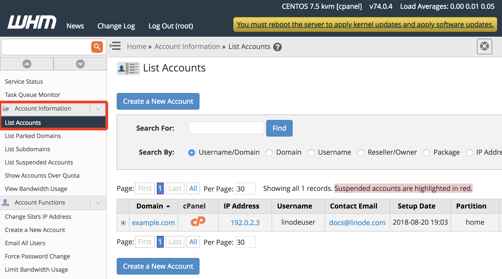
Verify that your new Linode’s IP is listed for the accounts. If it is not listed, use the CPanel IP Migration Wizard tool to update your account configurations with the new IP.
Verify SSL Certificates
The official CPanel migration documentation notes that SSL certificates (apart from the self-signed certificates that CPanel provides) need to be manually downloaded from the source CPanel server and then installed on the new Linode.
When writing this guide it was found that the SSL certificates from the test source server were transferred automatically. It’s recommended that you verify that your SSL certificates are present on the new server, and that you backup the certificate files from the source server.
The SSL certificates on your current CPanel host are located in
/etc/ssl. Download them to your computer:scp -r root@current_host_ip_address:/etc/ssl ~You can also use FileZilla to download the files.
If you are not able to login as
rootto your host, login as a user withsudoprivileges and then copy those files to the user’s home folder:ssh your_sudo_user@current_host_ip_address sudo cp -r /etc/ssl ~ sudo chown $(whoami):$(whoami) ssl exitThen download the files from the user’s home folder to your computer:
scp -r root@current_host_ip_address:~/ssl ~After downloading the files, log back into your host and remove the files from the
sudouser’s home folder:rm -r ~/sslIf you do not have terminal access to your current host, you can also copy the certificates from the CPanel interface. Load CPanel on your current host by visiting
http://your_current_host_ip_address:2083in your web browser and enter your CPanel account credentials.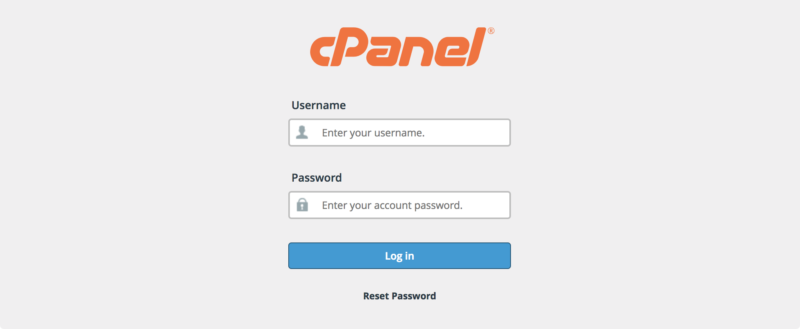
Visit the SSL/TLS section and view the private keys, certificate signing requests, and certificates listed. Copy and paste each of these to text files on your computer. Repeat this for each CPanel account on your current host.
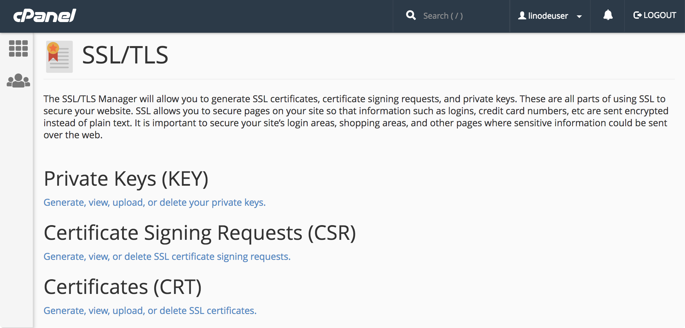
Visit
http://your_linode_ip_address:2083in your web browser to load the CPanel dashboard on your Linode. Bypass the browser warning message about the web server’s SSL/TLS certificate.When presented with the CPanel Login form, enter the credentials you use for your CPanel account on your current host. These credentials were transferred by the Transfer Tool and are the same as before.
Visit the SSL/TLS section and review the private keys and certificates sections. If you do not see your private keys and certificates, use the Upload a New Private Key and Upload a New Certificate forms to add them.
Visit the SSL/TLS section again and navigate to the Install and Manage SSL for your site (HTTPS) page. Click the Certificate Details link to view which certificate is installed for your site.
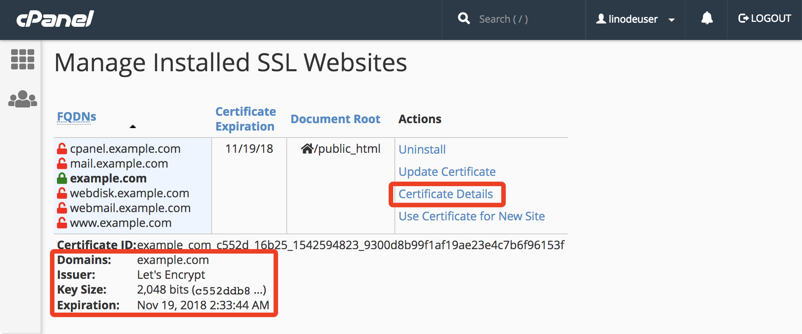
If your certificate is not being used, click the Browse Certificates button and choose your certificate from the dialog that appears. After choosing your certificate, click the Install Certificate button at the bottom of the page.
Repeat steps 4-8 for each transferred CPanel account.
Test Your New CPanel Deployment
If you visit your Linode’s IP address in your browser, the website served by your CPanel account will not appear. This is because the CPanel server expects your domain name to be passed in your web request, and you have not updated your DNS yet.
The Previewing Websites Without DNS guide describes a way to visit your domain prior to updating your DNS records. When you have updated your DNS, this workaround will no longer be necessary to view your site.
Migrating DNS Records
After completing the CPanel migration, update your DNS records to reflect your new Linode’s IP. Once this is done, site visitors will start loading your CPanel accounts’ services from your new Linode.
(Optional) Prepare Your Domain Name to Move
A recommended first step is to lower the Time to Live (TTL) setting for your domain so that the migration won’t have a negative impact on your site’s visitors. TTL tells DNS caching servers how long to save information about your domain. Because DNS addresses don’t often change server IP addresses, default TTL is typically about 24 hours.
When changing servers, however, make the TTL shorter to make sure that when you update your domain information, it takes effect quickly. Otherwise, your domain could resolve to your old server’s IP address for up to 24 hours.
Locate your current nameservers. If you’re not sure what your nameservers are, use a Whois Search tool. You will see several nameservers listed, probably all at the same company.

You can usually derive the website of your nameserver authority (the organization that manages your DNS) from the nameservers you find in the Whois report (e.g.
ns1.linode.comcorresponds withlinode.com). Sometimes the labeling for the nameservers is not directly related to the organization’s website, and in those cases you can often find the website by plugging the nameserver into a Google search.Contact your nameserver authority for details on how to shorten the TTL for your domain. Every provider is a little different, so you may have to ask for instructions.
 Updating TTL at common nameserver authorities
Most nameserver authorities will allow you to set the TTL on your domain or on individual records, but some do not allow this setting to be edited. Here are support documents from some common authorities that mention how they manage TTL:
Updating TTL at common nameserver authorities
Most nameserver authorities will allow you to set the TTL on your domain or on individual records, but some do not allow this setting to be edited. Here are support documents from some common authorities that mention how they manage TTL:Make a note of your current TTL. It will be listed in seconds, so you need to divide by 3600 to get the number of hours (e.g. 86,400 seconds = 24 hours). This is the amount of time that you need to wait between now and when you actually move your domain.
Adjust your TTL to its shortest setting. For example, 300 seconds is equal to 5 minutes, so that’s a good choice if it’s available.
Wait out the original TTL from Step 3 before actually moving your domain–otherwise, DNS caching servers will not know of the new, lower TTL yet. For more information on domain TTL, see our DNS guide.
Use Linode’s Nameservers
Follow Linode’s instructions on adding a domain zone to create DNS records at Linode for your domain. Recreate the DNS records listed in your current nameserver authority’s website, but change the IP addresses to reflect your Linode IPs where appropriate.
Locate your domain’s registrar, which is the company you purchased your domain from. If you’re not sure who your registrar is, you can find out with a Whois Search tool.

Your registrar may not be the same organization as your current nameserver authority, though they often are, as registrars generally offer free DNS services.
Log in to your domain registrar’s control panel and update the authoritative nameservers to be Linode’s nameservers:
ns1.linode.comns2.linode.comns3.linode.comns4.linode.comns5.linode.com
Updating authoritative nameservers at common registrars
Wait the amount of time you set for your TTL for the domain to propagate. If you did not shorten your TTL, this may take up to 48 hours.
Navigate to your domain in a web browser. It should now show the website from Linode, rather than your old host. If you can’t tell the difference, use the DIG utility. It should show the IP address for your Linode.
Set reverse DNS for your domain. This is especially important if you are running a mail server.
Note
If you’re having trouble seeing your site at the new IP address, try visiting it in a different browser or in a private browsing session. Sometimes your browser will cache old DNS data, even if it has updated everywhere else.
Update WHM Hostname
After your DNS changes have propagated, update WHM’s hostname to be your domain. In the menu on the left side of the WHM dashboard, navigate to the Networking Setup section and choose the Change Hostname option. Enter the new hostname in the form that appears and click the Change button:
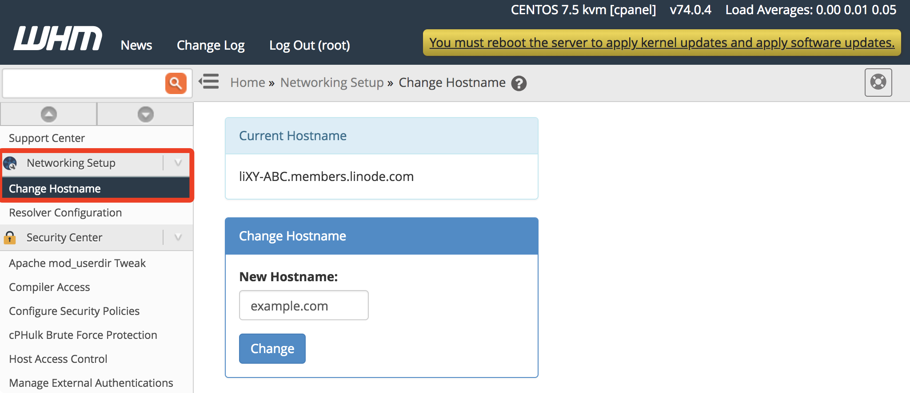
Transfer CPanel License
If you purchased your license directly from CPanel, update your license to feature your new Linode’s IP address. If you purchased your license through your previous host, then you will need to purchase a new license from CPanel for your Linode deployment. As an alternative to purchasing from CPanel, a free CPanel subscription is included for each of your Linodes if you are a Linode Managed subscriber.
More Information
You may wish to consult the following resources for additional information on this topic. While these are provided in the hope that they will be useful, please note that we cannot vouch for the accuracy or timeliness of externally hosted materials.
- CPanel Documentation - How to Move All cPanel Accounts from One Server to Another
- How to Transfer Accounts and Configurations Between cPanel Servers
- CPanel Documentation - Transfer Tool
Join our Community
Find answers, ask questions, and help others.
This guide is published under a CC BY-ND 4.0 license.